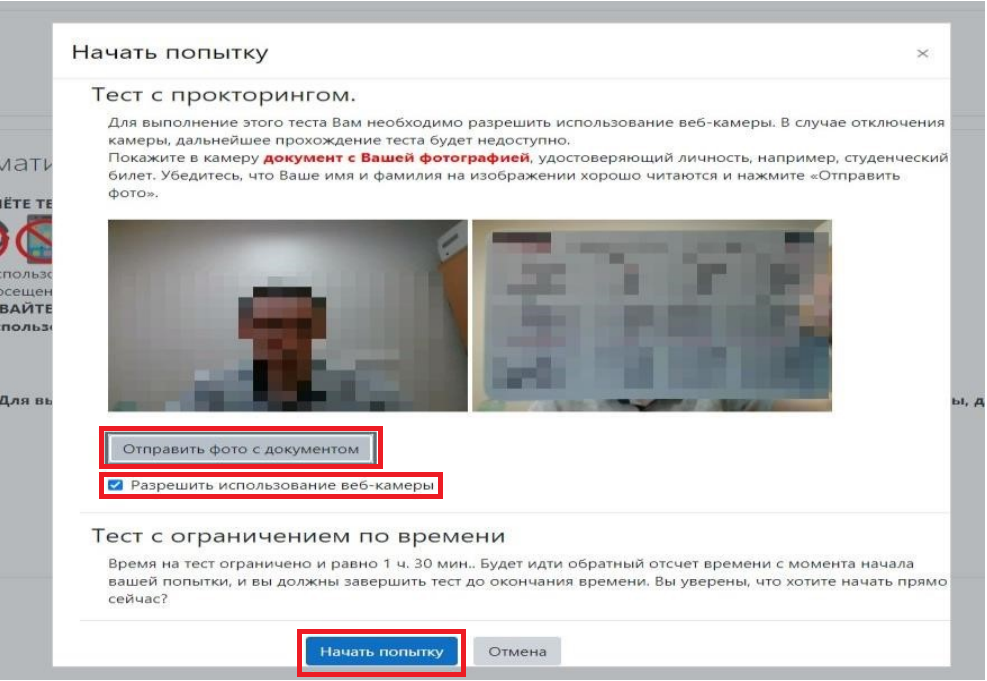

يتم الاختبار (NTK) في المواقع التالية https://exam1.urfu.ru/, https://exam2.urfu.ru/.
انقر على «Расписание НТК в зимнюю/летнюю сессию … учебного года».
 في الميدان ”Поиск“ أدخل رقم مجموعتك الأكاديمية، ثم اختر موضوعًا وانقر على زر ”Зачёт“.
في الميدان ”Поиск“ أدخل رقم مجموعتك الأكاديمية، ثم اختر موضوعًا وانقر على زر ”Зачёт“.

السماح بالوصول إلى الكاميرا. أثناء اختبار STC، ستلتقط الكاميرا صورًا لوجهك كل 30 ثانية، لذا يجب أن يكون وجهك مضاءً جيدًا. تذكر أنه يجب ألا يكون هناك أشخاص غير مصرح لهم في الغرفة.
التقط صورة لوثيقة (هوية الطالب/جواز السفر).

بمجرد الانتهاء من الاختبار، ستتمكن من مراجعة نتائج اختبارك النهائية.
درجات BRS الخاصة بك. قد لا تظهر على الفور. إذا حصلت على درجة 1 من 100 في السبب. أما إذا رأيت درجتك في اختبار ”BRS“، فهذا يعني أن الامتحان قد تم اجتيازه بنجاح اختبار GER، فهذا يعني أن الامتحان لم يتم اجتيازه. سوف تتلقى رسالة بريد إلكتروني توضح .
هام: إذا كنت تستخدم مسودة، اعرض الورقة على الكاميرا على كلا الجانبين قبل بدء بدء بار.